1.ทุ่งศรีเมือง (Tung Sri Muang)
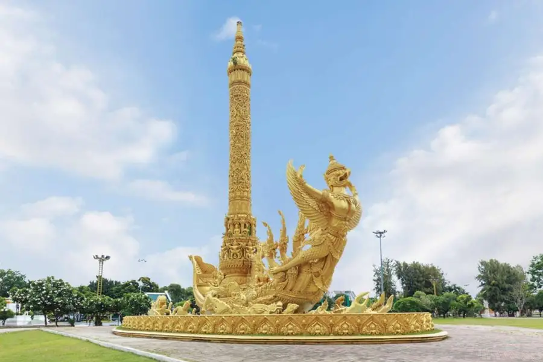
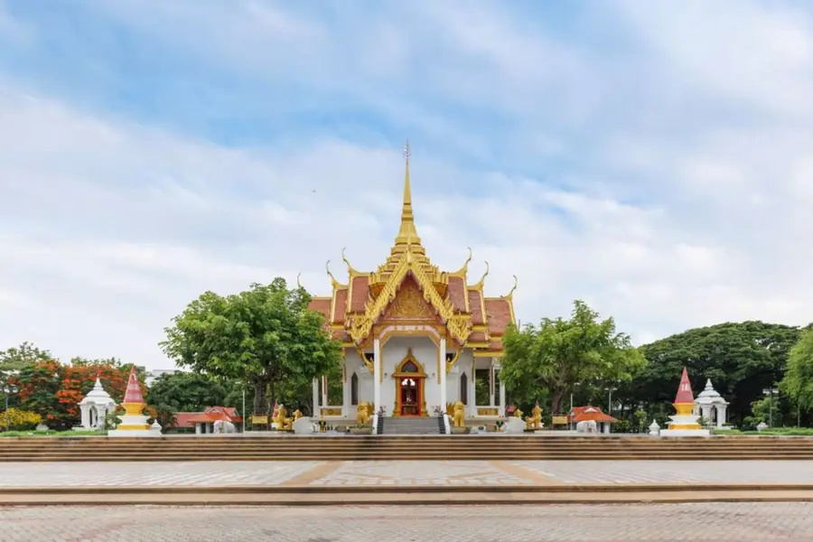
ทุ่งศรีเมือง เดิมมีชื่อว่า “นาทุ่งศรีเมือง” เป็นที่ประดิษฐานศาลหลักเมือง หนึ่งในที่เที่ยวอุบลราชธานียอดนิยม ตั้งอยู่ใจกลางเมืองอุบลราชธานี ณ ถนนอุปราช บริเวณหน้าศาลากลางจังหวัด (หลังเก่า) มีลักษณะเป็นทุ่งกว้าง แต่เดิมเป็นที่ทำนาของเจ้าเมือง ต่อมาสมัยรัชกาลที่ 5 ได้โปรดฯ ให้งดการทำนาที่ทุ่งศรีเมือง และนำมาใช้สอยเป็นพื้นที่สาธารณะเช่นเดียวกับสนามหลวงกรุงเทพฯ แทน โดยทุ่งนี้เป็นทั้งที่ประกอบพิธีศพเจ้าเมือง จัดงานประเพณีแห่เทียนพรรษา และประเพณีอื่นๆ ปัจจุบัน ทุ่งศรีเมืองได้กลายเป็นที่พักผ่อนของชาวเมืองอุบล และเป็นที่จัดเทศกาลงานบุญต่าง ๆ นอกจากนี้ที่นี่ยังมีต้นเทียนพรรษาเฉลิมพระเกียรติ พระบาทสมเด็จพระปรมินทรมหาภูมิพลอดุลยเดช ในหลวงรัชกาลที่ 9 เนื่องในวโรกาสมหามงคลเฉลิมพระชนมพรรษาครบ 6 รอบ เมื่อ 5 ธันวาคม พ.ศ. 2542 และยังมีอนุสาวรีย์พระปทุมวรราชสุริยวงษ์ (เจ้าคำผง) ผู้ก่อตั้งเมืองอุบลราชธานี โดยจะมีพิธีบวงสรวงและสดุดีวีรกรรมของท่าน ทุกวันที่ 10 พฤศจิกายน ของทุกปี ณ ทุ่งศรีเมืองแห่งนี้อีกด้วย
พิกัด : ดูแผนที่
2.วัดทุ่งศรีเมือง (Tung Sri Muang Temple)
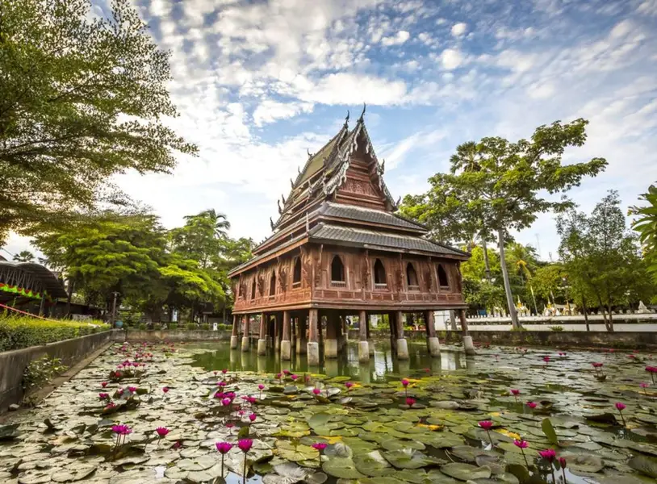
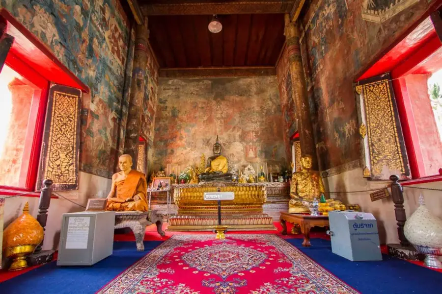
วัดทุ่งศรีเมือง เป็นวัดคู่บ้านคู่เมืองอีกหนึ่งที่เที่ยวอุบลราชธานี ตั้งอยู่ทางทิศตะวันออกของ “ทุ่งศรีเมือง” สร้างขึ้นในสมัยพระบาทสมเด็จพระนั่งเกล้าเจ้าอยู่หัว จุดเด่นของวัดแห่งนี้ คือ “หอไตรกลางน้ำ” ซึ่งได้รับการยกย่องว่า เป็นหอไตรที่สวยงามที่สุดและสมบูรณ์มากที่สุดแห่งหนึ่งในภาคอีสาน จัดเป็นหนึ่งในของดีประจำจังหวัดอุบลราชธานีเลยทีเดียว นอกจากนี้ยังมีหอระฆัง และภาพจิตรกรรมฝาผนัง รวมถึงศิลปวัตถุมีค่าอีกหลายอย่าง เช่น พระพุทธบาทจำลอง และองค์พระเจ้าใหญ่เงินฮาง หอไตรกลางน้ำเป็นหอพระไตรปิฏกที่สร้างด้วยไม้ ตั้งอยู่กลางสระน้ำ มีลักษณะผสมผสานกันระหว่างศิลปะของไทย ลาว และพม่า ภายในมีตู้เก็บพระธรรมลงรักปิดทอง และหอไตรกลางน้ำยังได้รับรางวัล “อนุรักษ์สถาปัตยกรรมดีเด่น” จากสมเด็จพระกนิษฐาธิราชเจ้า กรมสมเด็จพระเทพรัตนราชสุดาฯ สยามบรมราชกุมารี ถือว่าเป็นสถานที่เที่ยวเมืองอุบลที่ห้ามพลาด
พิกัด : ดูแผนที่
3.วัดใต้พระเจ้าใหญ่องค์ตื้อ (Wat Tai Phra Chao Yai Ong Tue)
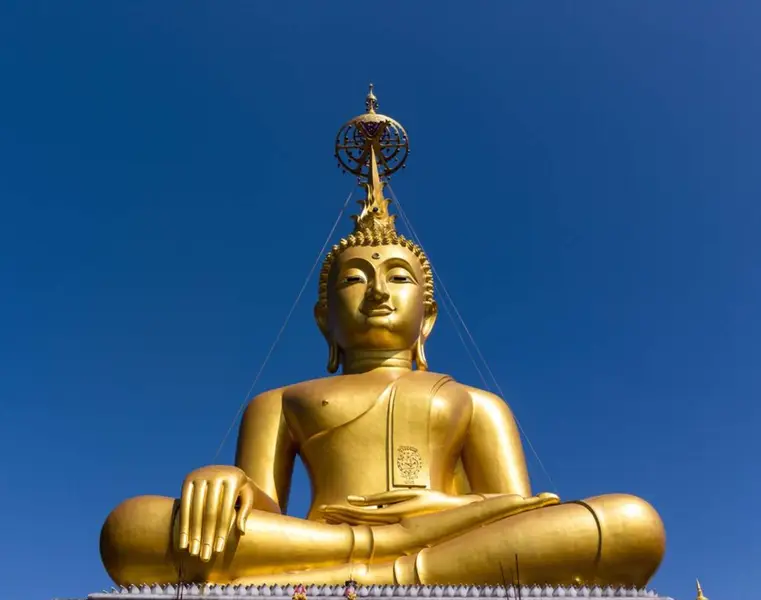
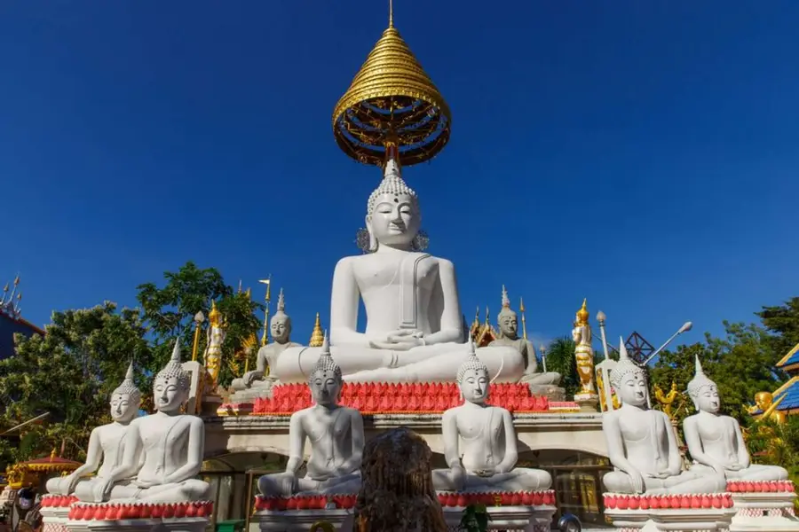
วัดใต้พระเจ้าใหญ่องค์ตื้อ หรือวัดใต้เทิง ตั้งอยู่ที่ถนนพรหมราช เป็นที่เที่ยวอุบลราชธานีอันมีประวัติศาสตร์เก่าแก่ และเป็นวัดที่ถูกเคารพนับถือจากทั้งฝั่งไทยและฝั่งลาว ภายในพระอุโบสถมณฑปเพชร 7 แสงพระเจ้าใหญ่องค์ตื้อ เป็นที่ประดิษฐาน “พระเจ้าใหญ่องค์ตื้อ” พระพุทธรูปเนื้อทองสำริด ปางมารวิชัย โดยมีความสำคัญเป็น 1 ใน 5 องค์จากจำนวนพระเจ้าใหญ่องค์ตื้อทั้งหมดที่มีอยู่ในประเทศไทย นอกจากพระเจ้าใหญ่องค์ตื้อแล้ว ยังมีโบราณวัตถุ ได้แก่ พระพุทธรูปปางยืนห้ามสมุทร 4 องค์ และพระพุทธรูปเจตมุนเพลิงองค์ตื้อ (สีดำสนิท) หลักศิลาจารึกหินทราย 2 หลัก วิหารเฉลิมพระเกียรติ 200 ปี และเป็นที่ประดิษฐานพระพุทธมงคลรัตนสิริธัญสถิตและเจดีย์พระบรมสารีริกธาตุ โดยทุกวันที่ 1-5 มีนาคมของทุกปี จะมีงานเทศกาลอัญเชิญพระพุทธรูปเจตมุนเพลิงองค์ตื้อ เพื่อให้ประชาชนได้นมัสการสรงน้ำตลอด 5 วัน 5 คืน
พิกัด : ดูแผนที่
4.วัดพระธาตุหนองบัว (Wat Phrathat Nong Bua)
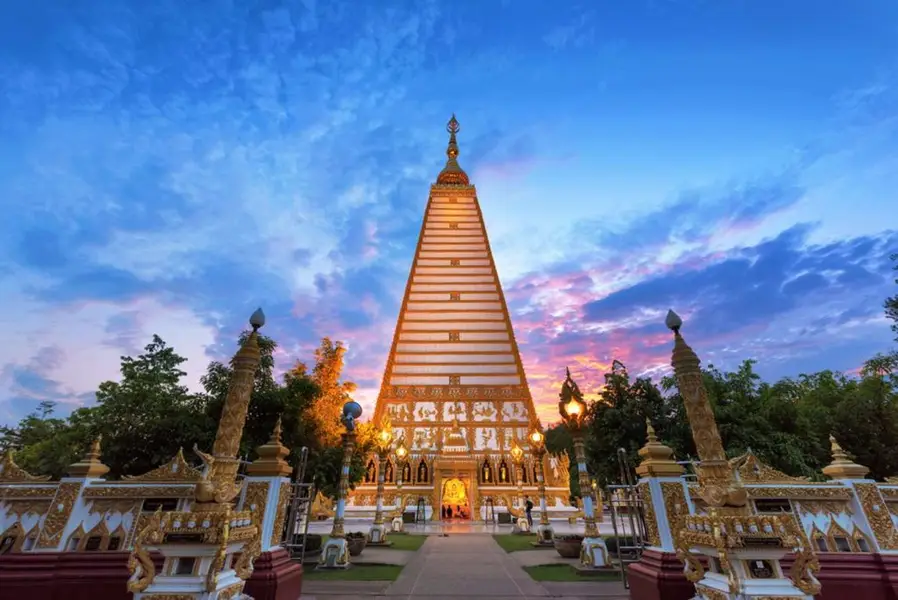
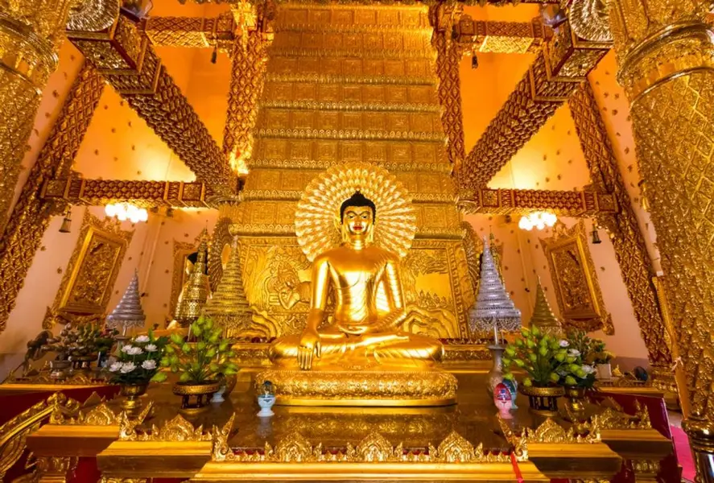
วัดพระธาตุเจดีย์ศรีมหาโพธิ์ หรือที่ชาวอุบลเรียกกันว่า “วัดพระธาตุหนองบัว” ตั้งอยู่ที่ถนนธรรมวิถี เป็นที่เที่ยวอุบลราชธานีที่ถูกสร้างขึ้นในปี พ.ศ. 2500 เพื่อเป็นสัญลักษณ์ครบรอบ 25 ศตวรรษของพุทธศาสนา โดยพระธาตุเจดีย์ศรีมหาโพธิ์นี้ ได้จำลองแบบมาจากเจดีย์พุทธคยา ประเทศอินเดีย สถานที่ตรัสรู้ของพระพุทธเจ้า โดยบริเวณฐานเจดีย์ มีประตูทางเข้าสู่ใจกลางเจดีย์ทั้ง 4 ด้าน ภายในองค์พระธาตุบรรจุพระบรมสารีริกธาตุ ซึ่งถูกบรรจุไว้ในสถูปลงรักปิดทองศิลปะอินเดียแบบปาละ สลักลายเรื่องพระเจ้า 500 ชาติ ด้านหลังของพระธาตุฯ มีอุโบสถศาลา ซึ่งสร้างเลียนแบบรูปทรงมาจากปรินิพพานวิหาร เมืองกุสินาราย รัฐอุตร ประเทศอินเดีย ซึ่งเป็นที่เสด็จดับขันธปรินิพพานของพระพุทธเจ้า อีกหนึ่งไฮไลท์ในพระธาตุฯ แห่งนี้ คือรูปปั้นฉัพยาปุตตะ หรือพญานาคสีรุ้ง ที่ขึ้นชื่อในเรื่องของความงดงาม และความหลากหลายของสีวรกาย
พิกัด : ดูแผนที่
5.พิพิธภัณฑสถานแห่งชาติอุบลราชธานี (Ubon Ratchathani National Museum)
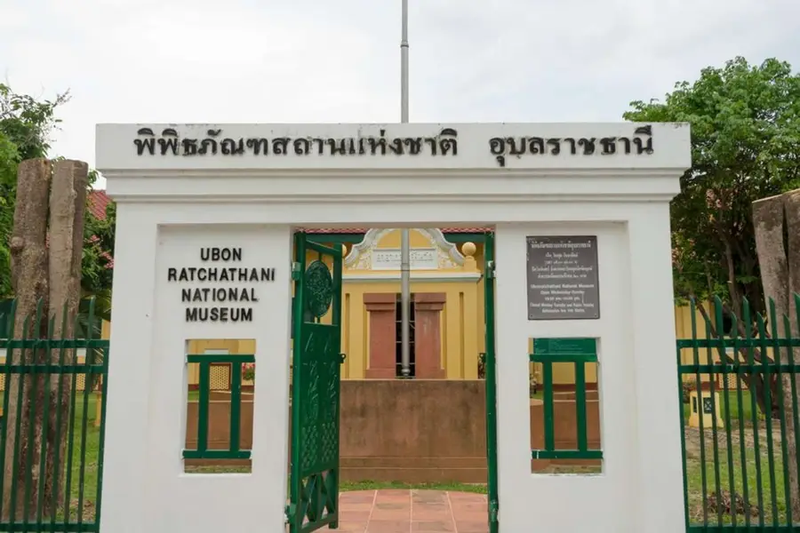
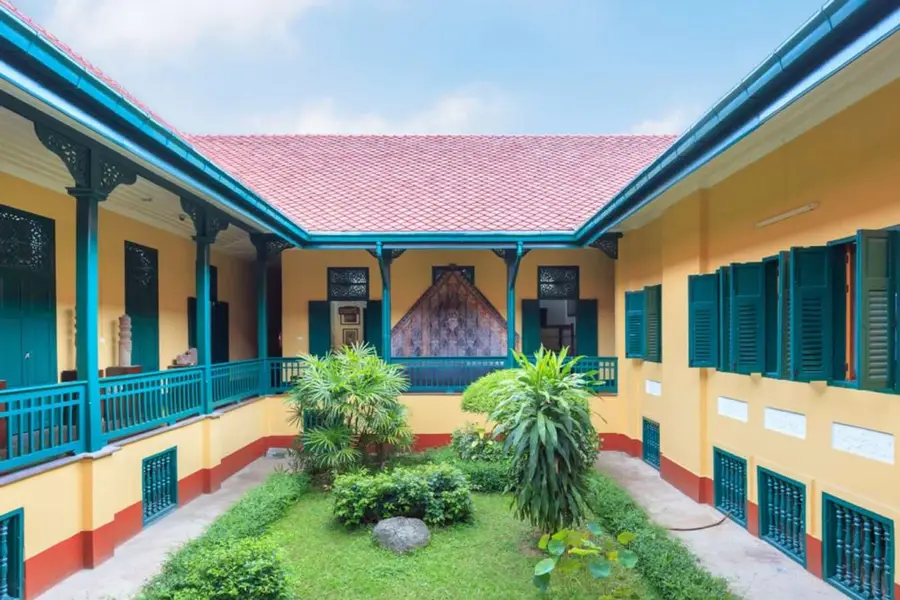
พิพิธภัณฑ์แห่งนี้ เป็นพิพิธภัณฑสถานแห่งชาติประจำจังหวัดแห่งแรกในภาคตะวันออกเฉียงเหนือ เป็นแหล่งเรียนรู้ประวัติศาสตร์ ความเป็นมาของจังหวัดอุบลราชธานี ตลอดจนโบราณคดี ศิลปวัฒนธรรม หัตถกรรม พุทธศาสนา และการปกครอง เดิมพิพิธภัณฑ์ถูกใช้เป็นศาลากลางจังหวัดอุบลราชธานี โดยสร้างขึ้นเมื่อปีพ.ศ. 2461 ในรัชสมัยพระบาทสมเด็จพระมงกุฏเกล้าเจ้าอยู่หัว ลักษณะของพิพิธภัณฑ์แห่งนี้เป็นอาคารชั้นเดียว ก่ออิฐถือปูนยกพื้นสูง หลังคาทรงปั้นหยา มุงกระเบื้องว่าว แผนผังอาคารเป็นรูปสี่เหลี่ยมผืนผ้าหันหน้าไปทางทิศเหนือ ถือเป็นอาคารที่มีคุณค่าทางสถาปัตยกรรม และเป็นอนุสรณ์สถานที่สำคัญแห่งหนึ่งของจังหวัดอุบลราชธานี อีกทั้งยังได้รับรางวัลอาคารอนุรักษ์ศิลปกรรมดีเด่นในปี พ.ศ. 2532 จากสมาคมสถาปนิกสยามในพระบรมราชูปถัมถ์ นับเป็นที่เที่ยวอุบลราชธานีอันทรงคุณค่าที่ควรมาให้ได้
พิกัด : ดูแผนที่
วัดสิรินธรวราราม (Wat Sirindhornwararam)
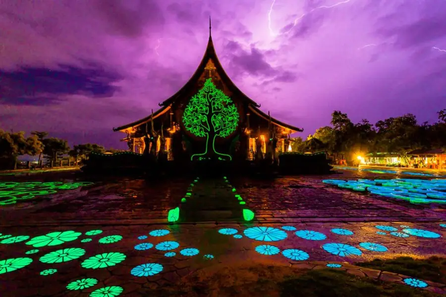
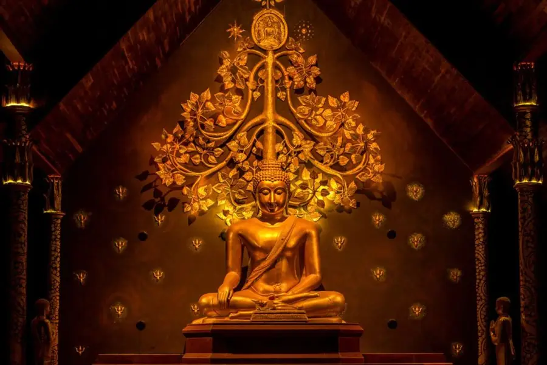
วัดเรืองแสง หรือวัดสิรินธรวราราม แห่งตำบลช่องเม็ก อำเภอสิรินธร โดดเด่นด้วยอุโบสถสีปัดทองตั้งเด่นเป็นสง่า ด้านหลังของอุโบสถเป็นจิตรกรรมเรืองแสงสีเขียวของต้นกัลปพฤกษ์อันแสนสวยงามตื่นตาตื่นใจในยามค่ำคืน ด้วยการใช้สารเรืองแสงหรือสารฟลูออเรสเซนต์ ซึ่งมีคุณสมบัติรับแสงพระอาทิตย์ในตอนกลางวัน และปล่อยพลังงานออกมาในตอนกลางคืน โดยเป็นฝีมือการออกแบบของช่าง “คุณากร ปริญญาปุณโณ” ซึ่งมีแรงบันดาลใจมาจากต้นไม้แห่งชีวิต ในภาพยนตร์เรื่อง “อวตาร” และช่วงเวลาที่ดีที่สุดสำหรับการชมและถ่ายภาพคือ ตั้งแต่เวลา 18.00-20.00 น. นอกจากนี้ บริเวณด้านหลังพระอุโบสถยังเป็นจุดชมวิวริมลำน้ำโขง ทิวทัศน์ของฝั่งลาว ด่านช่องเม็ก และอ่างเก็บน้ำบริเวณเชิงเขา นับว่าเป็นหนึ่งในที่เที่ยวอุบลราชธานีที่มีจุดชมพระอาทิตย์ตกดินที่สวยงาม
พิกัด : ดูแผนที่